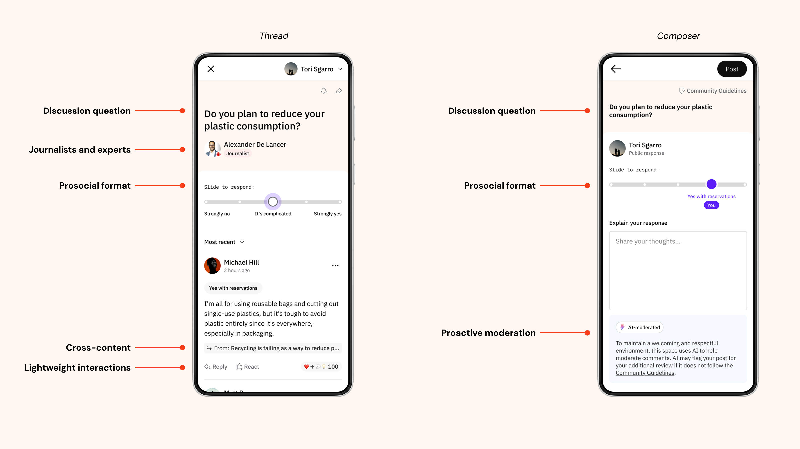
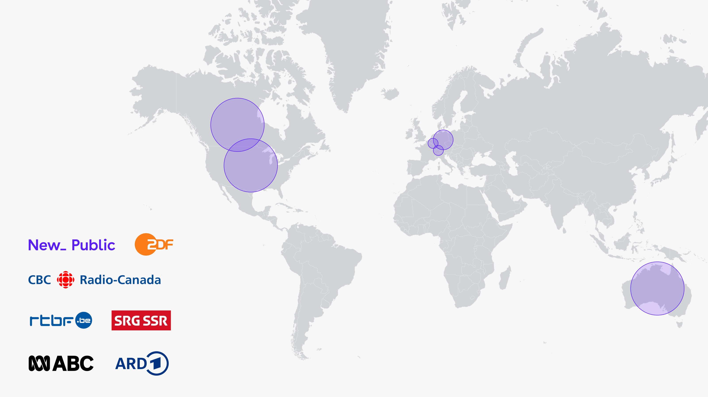
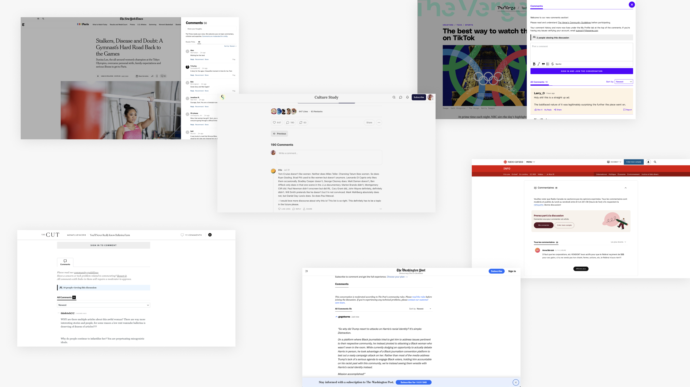
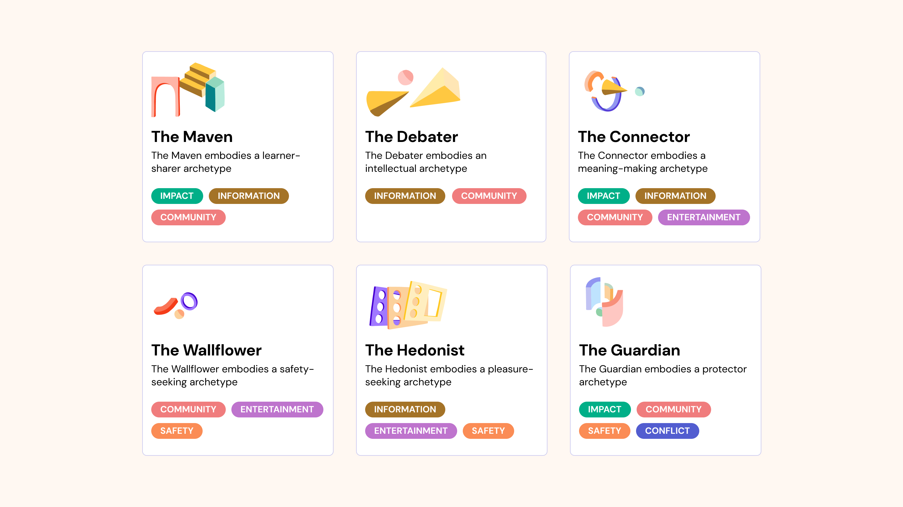
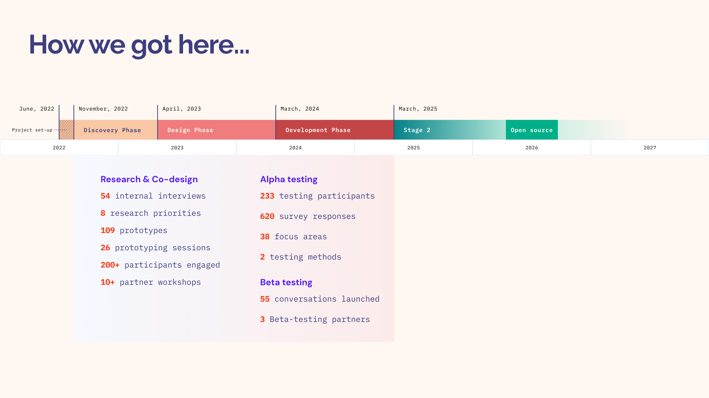
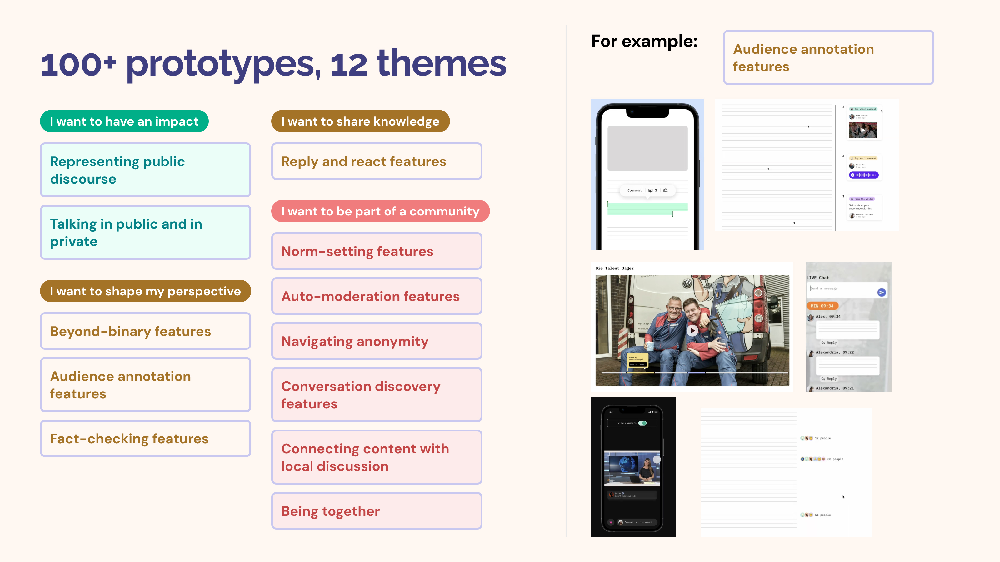
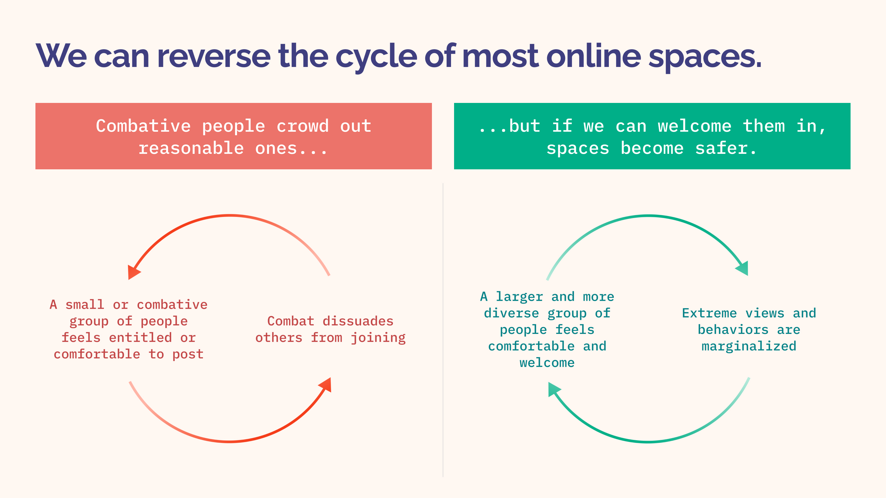
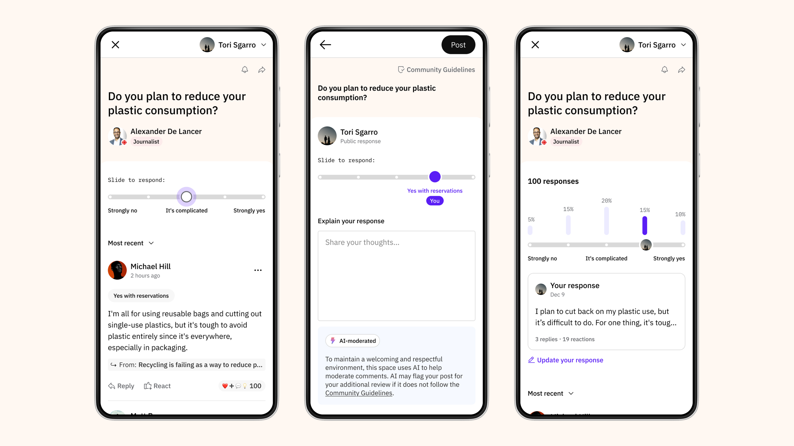
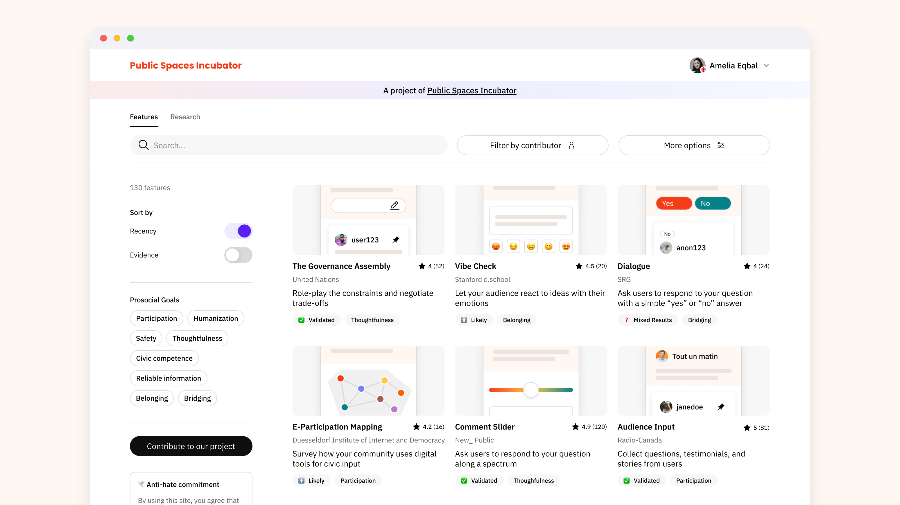
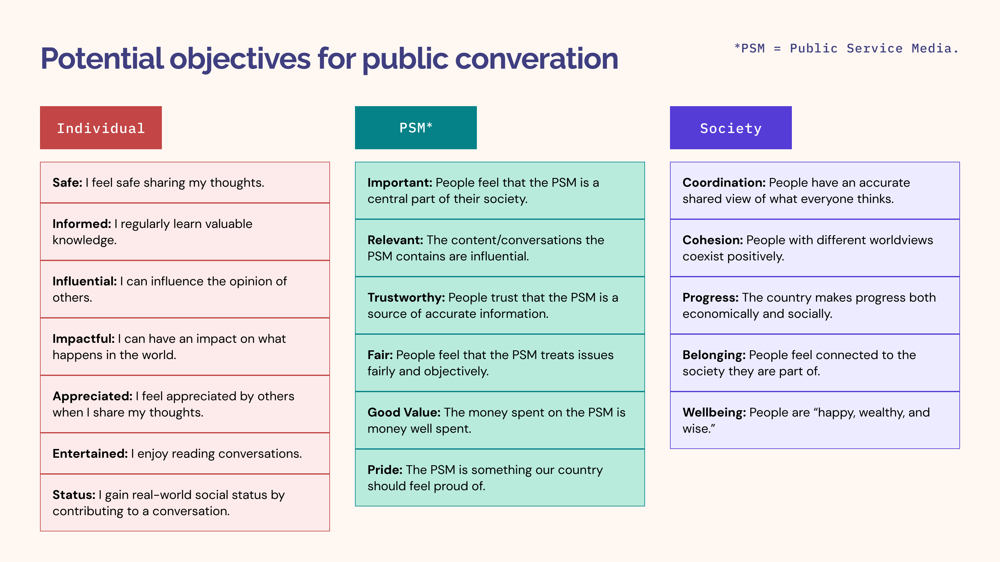

Designing Public Conversation
New_ Public’s Public Spaces Incubator is an international consortium of public broadcasters that aims to reimagine public conversation on the internet.
YEAR: 2023-present
MY ROLE: Staff product designer
CREDITS: Min Li Chan (product director), Rob Ennals (principal engineer)
ORIGINALLY PUBLISHED: newpublic.substack.com

What’s different about our conversation spaces.
The problem
Public discourse on the internet has never been more fragile — social media is increasingly toxic and fragmented, and trust in the news and institutions is declining. People are fleeing the dominant platforms to smaller, safer spaces like private forums or group chats, leaving large absences in the digital public sphere.
But a healthy public sphere is essential to functioning democratic societies. We believe that public media organizations can play an important role as hosts, moderators, and platforms for such large public conversations — especially as independent, publicly-funded institutions working in the public interest, rather than primarily for profit and growth.

Our project is an international partnership between New_ Public and public service media organizations — originally, CBC/Radio-Canada (Canada), ZDF (Germany), RTBF (Belgium), SRG SSR (Switzerland), and more recently, ARD (Germany), and ABC (Australia).

The status quo: Comments on news and media sites are fragmented across individual articles, the loudest and most controversial voices post as many times as they want, the vast majority of people do not participate, and comment moderation is reactive and resource-intensive.
Grounding ambitious goals in real lives
Of course, there are many ways for people to participate in public conversation — and this question of how and why to participate in public conversation became our focus of design exploration. Our project emphasizes the importance of public conversation in democracy and society, but it’s also necessary for us to understand the importance of public conversation in the real context of people’s daily lives:
Why do people seek out and participate in public conversation online? What are their needs, goals, and values for these conversations? What obstacles prevent them from participating?
Before jumping into designing, I collaborated with researchers and facilitators to plan, script, and moderate in-person and remote user interviews, co-creation activities, and usability tests. We spoke to over 200 people — of varying ages, languages, locations, and digital literacies — in our research across the four countries where our collaborators CBC/Radio-Canada (Canada), ZDF (Germany), RTBF (Belgium), and SRG SSR (Switzerland) are based.

We found common motivations to join, participate in, and leave online conversations across the four countries where we conducted research. (Credit: Angelica Quicksey, Sarah Ingle, Yvonne Dannyluck.)
How we got here (100+ prototypes!)
Based on this research, I led the initial exploratory design process over one year, in partnership with a principal engineer, to prototype 100+ concepts for improving online discourse and reducing polarization. After that year, the consortium selected ~10 of these concepts to develop into a coherent end-to-end experience for Alpha and Beta testing.
We continue to pilot and iterate on this product, now with a more built-out product team at New_ Public (including four engineers, two product managers, and two researchers), and together with our partners. I direct the contributions of ~10 partner designers, who vary in time/effort allocated to the project.

I joined our project at the beginning of a year-long Design Phase.

During the Design Phase, we rapidly prototyped 100+ concepts across 12 themes of design exploration before converging on ~10 of these prototypes for Alpha and Beta testing.
Cross-content and long-lasting conversations
On most news and media sites today, the comments section is attached to an individual story. This tends to limit the relevance of a discussion — it can last only as long as the news cycle.
Instead, our product frames a conversation around a guiding question or prompt (for example, “How will your habits change in response to the American tariffs?”), written by expert editorial or audience engagement teams. This prompt spans multiple related stories as entry points to the conversation — and broadcasters can continue to add to these as they publish more related content over time.
We’ve found that this approach builds on broadcasters’ strengths (their journalism), without being tied to the short lifespan of any one story in the news cycle. And in testing we’ve learned that a well-crafted conversation prompt is a deciding factor for participation and engagement, and guides healthier and more prosocial discussion.

Cross-content conversations connect to multiple stories on a broadcaster’s site. (Credit: In collaboration with Alexandra St.-Louis, Radio-Canada.)
Crowding in more varied viewpoints
On many popular social conversation platforms today, like Reddit or Twitter/X, a conversation begins with a freeform textbox, and people can post as many times as they want without much guidance or structure. Both anecdotally and in our research, we have found that this setup allows the few loudest or most controversial voices to crowd out other views.

Our project aims to reduce the existing negative feedback loop of online spaces and amplify a positive feedback loop instead.
Yet there is a silent majority present, who we’ve found would actually be willing to participate if they feel safe to do so. In an effort to invite in more varied viewpoints from these wallflowers, we structure every discussion with a “prosocial format” — each designed to encourage constructive behaviors (crowding in, or amplifying a positive feedback loop), while acting as a speedbump to unhealthy behaviors (crowding out, or reducing a negative feedback loop). We support the latter objective with AI pre-moderation, which, together with human moderators, prevents harmful posts that violate community guidelines. Moreover, each format creates roles for noncommenters through lightweight interactions.

Each conversation space is structured by a prosocial format. In the case of Comment Slider, users respond to a question along a spectrum.
Finding a fit with journalists and open-source contributors
A major value proposition to audiences and to our partners is not just our product, but the programmatic structure of our project itself: audiences benefit from a direct connection to journalists and experts in a trusted environment, and broadcasters build a product together with us and with each other, contributing their own designers, engineers, and product leads to the consortium to varying degrees.
As the only product designer at New_ Public’s Public Spaces Incubator, a major focus of my work has not just been on the end-user experience of our product, but also on the internal experience of our tooling. I advocated for us to prioritize the design of our conversation setup and maintenance tool, drawing on my expertise designing for newsrooms, and I created a robust design system from scratch, making it as easy as possible for partner designers and developers to contribute to and adapt our product.
Both areas of work will become even more important as we look towards open-sourcing our product in 2026.

A speculative design for a possible future open-source library of prosocial conversation features.
How to measure a good public conversation
We believe that our work, co-designed with audiences, can create value across three different dimensions: 1) for individual people, as users and citizens, 2) for public service media, as organizations and institutions, and 3) for the public at large.
We are currently working with our collaborators and experts to develop a metrics framework that takes these different dimensions into account. Early signals suggest that our interventions create healthier and more prosocial conversations in comparison to our partners’ traditional comments section.
Yet one of the most important challenges ahead remains the more traditional problem of bringing more people into these spaces and improving engagement in them.
